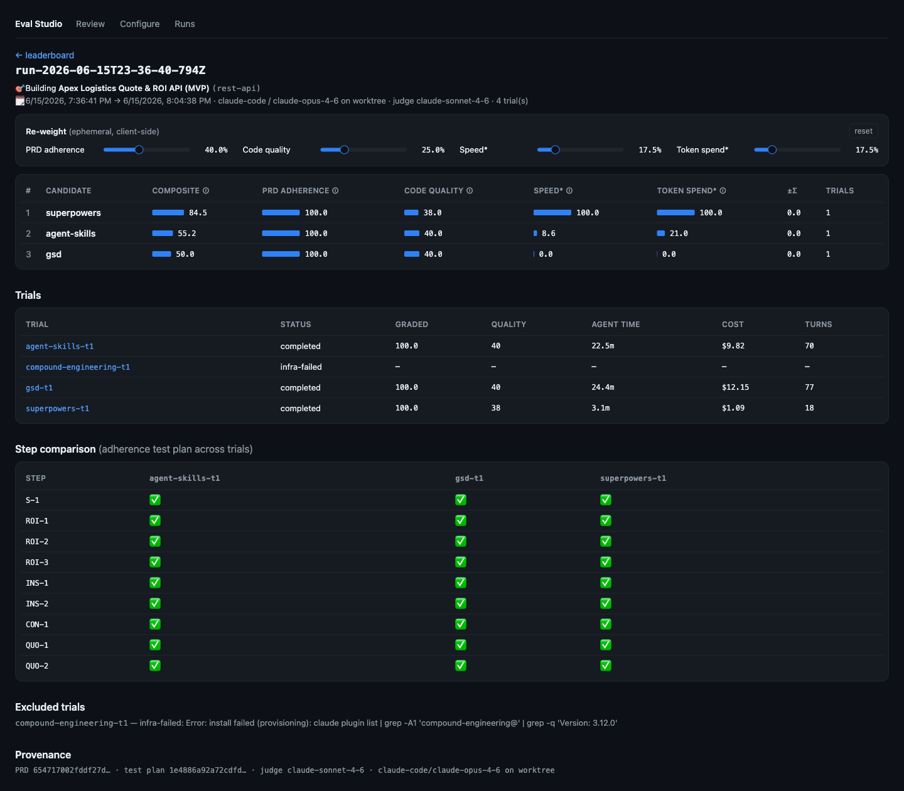
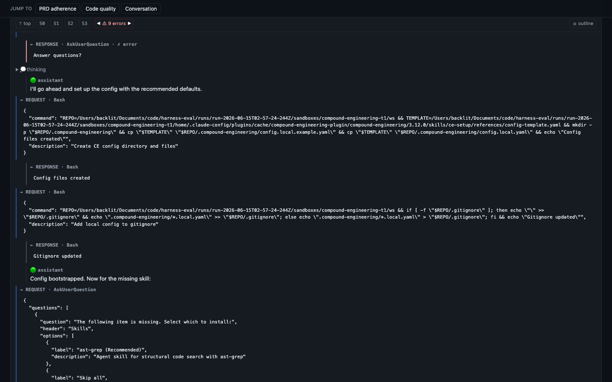

🏆 Demo leaderboard static snapshot
Leaderboard — one PRD, framework is the only variable
Per-trial telemetry
Runs across apps
The harness builds the same spec with every framework — and it now runs many specs. Each run is graded against its own frozen PRD and test plan; cross-PRD scores aren't pooled (different specs, different difficulty).
Beyond this snapshot — the full Eval Studio
This page is a read-only leaderboard. The local studio (bun run studio) adds the whole workflow:
Pick target, frameworks, harness, worker/grader models, sandbox provider, trials and concurrency — then launch a real run, a zero-spend dry run, or copy the CLI command.
Watch each run stream provisioning → installing → building → grading, with cost-so-far and a cancel that tears down the in-flight sandbox.
Per-candidate composite + dimensions, a step-by-step adherence comparison, excluded trials with reasons, and frozen provenance hashes.
Every PRD test-plan step with pass/partial/fail, weighted credit and cited evidence, plus the blind judge's five criteria with samples.
The full build transcript — request/response, thinking, tool calls — with session jumps, an error navigator, and an outline trace to where a step went wrong.
Five sandbox providers, swappable worker/judge models, design-system adherence scoring, and bring-your-own PRD targets.

